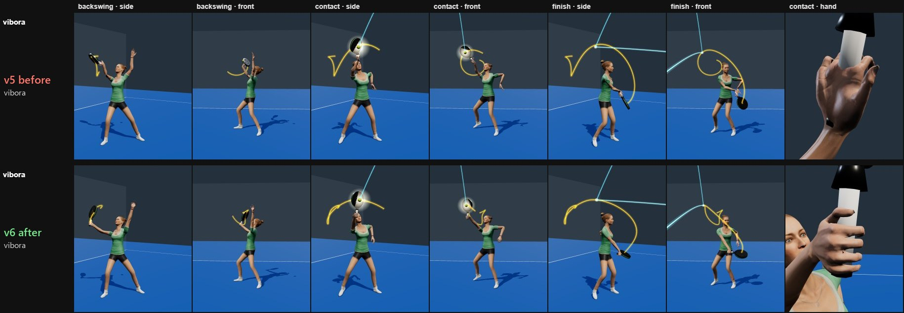
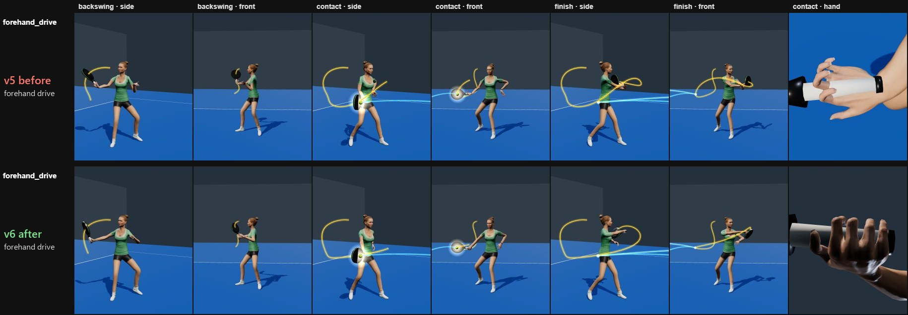
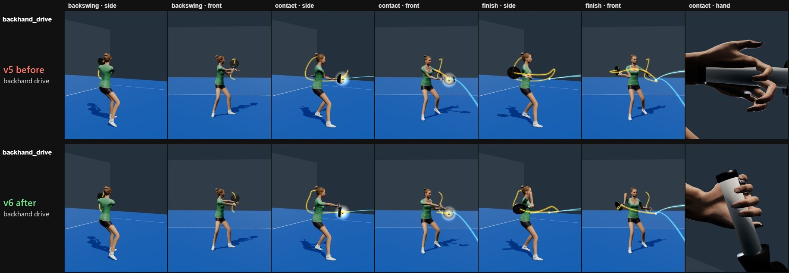
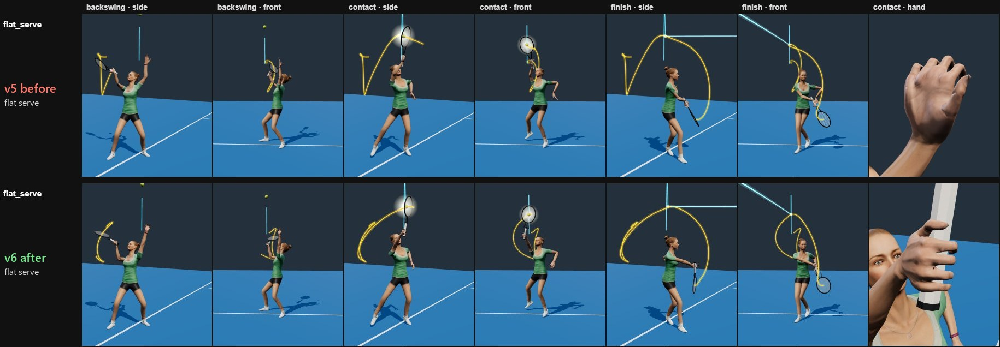
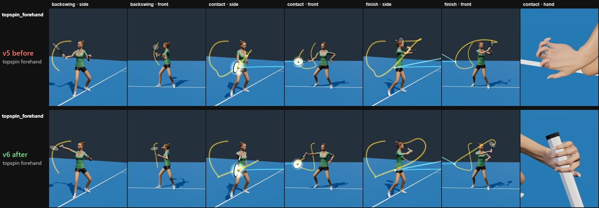
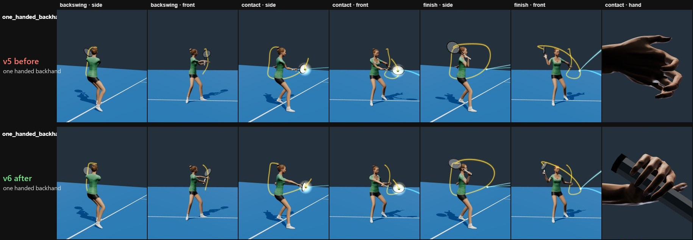
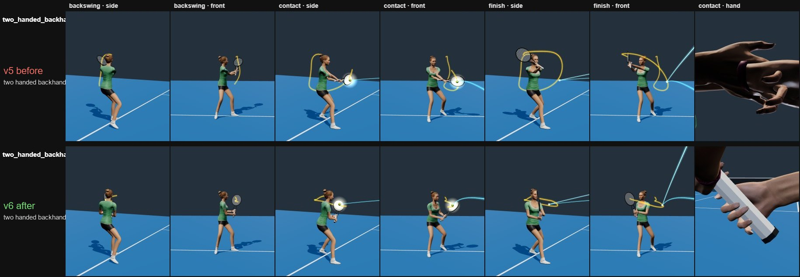

…
Slow motion eases in before contact and out after it. Left-handed mirrors the whole scene. Contact height moves the hand at contact; the ball path is recomputed so it still meets the racket.
Every stroke is one data file of phase targets, solved live onto the same 3D player through an anatomical arm model and a grip socket. Gold traces the racket head, blue the ball. These are ideal techniques authored from standard coaching models, not measured from a player.
New, v7 prototype: Kick serve v6 vs v7, with whole-body motion: leg drive, a ballistic jump, landing inside the court, side-by-side video.
Slow motion eases in before contact and out after it. Left-handed mirrors the whole scene. Contact height moves the hand at contact; the ball path is recomputed so it still meets the racket.
The first version held the racket like a stick glued to the fingertips, and the upper arm was twisted about 180° in 95% of all frames, so the elbow bent against its own axis. Version 6 rebuilds the arm:
Every stroke is gated by scripts/check.mjs at 120 Hz: joint ranges, grip gap, finger fit, racket–body collisions, bone lengths and smoothness against the earlier bandeja. Result: 26 of 26 pass. The two-handed backhand is a closed chain: both arms are solved together, then the top hand is re-solved at every 1/120 s so its fist stays exactly on the handle (0.0 mm on both hands).







Full sheets: padel before · padel after · tennis before · tennis after · version 5 player
| Sport | Stroke | Grip | Frames out of range | Hand–handle gap mm | 2nd hand mm | Racket–body clearance mm | Accel. jump | Gate |
|---|---|---|---|---|---|---|---|---|
| padel | bandeja | continental | 0 | 0.0 | 27 | 112 | PASS | |
| padel | vibora | continental | 0 | 0.0 | 126 | 312 | PASS | |
| padel | smash | continental | 0 | 0.0 | 147 | 301 | PASS | |
| padel | smash x3 | continental | 0 | 0.0 | 141 | 301 | PASS | |
| padel | bajada | continental | 0 | 0.0 | 166 | 306 | PASS | |
| padel | forehand drive | continental | 0 | 0.0 | 91 | 56 | PASS | |
| padel | backhand drive | continental | 0 | 0.0 | 2 | 118 | PASS | |
| padel | forehand volley | continental | 0 | 0.0 | 167 | 77 | PASS | |
| padel | backhand volley | continental | 0 | 0.0 | 201 | 75 | PASS | |
| padel | globo | continental | 0 | 0.0 | 91 | 56 | PASS | |
| padel | chiquita | continental | 0 | 0.0 | 89 | 56 | PASS | |
| padel | salida de pared | continental | 0 | 0.0 | 70 | 65 | PASS | |
| padel | serve | continental | 0 | 0.0 | 78 | 56 | PASS | |
| tennis | flat serve | continental | 0 | 0.0 | 118 | 334 | PASS | |
| tennis | kick serve | continental | 0 | 0.0 | 115 | 334 | PASS | |
| tennis | slice serve | continental | 0 | 0.0 | 125 | 334 | PASS | |
| tennis | topspin forehand | semi western fh | 0 | 0.0 | 138 | 56 | PASS | |
| tennis | one handed backhand | eastern bh | 0 | 0.0 | 166 | 56 | PASS | |
| tennis | two handed backhand | two handed bh | 0 | 0.0 | 0.0 | 81 | 246 | PASS |
| tennis | slice backhand | continental | 0 | 0.0 | 177 | 66 | PASS | |
| tennis | tennis forehand volley | continental | 0 | 0.0 | 208 | 77 | PASS | |
| tennis | tennis backhand volley | continental | 0 | 0.0 | 279 | 75 | PASS | |
| tennis | overhead smash | continental | 0 | 0.0 | 204 | 301 | PASS | |
| tennis | tennis lob | eastern fh | 0 | 0.0 | 130 | 56 | PASS | |
| tennis | drop shot | continental | 0 | 0.0 | 123 | 56 | PASS | |
| tennis | return of serve | eastern fh | 0 | 0.0 | 109 | 83 | PASS |
Character: Microsoft Rocketbox avatar (MIT licence). Poses are authored targets solved within human joint ranges; there is no motion capture.